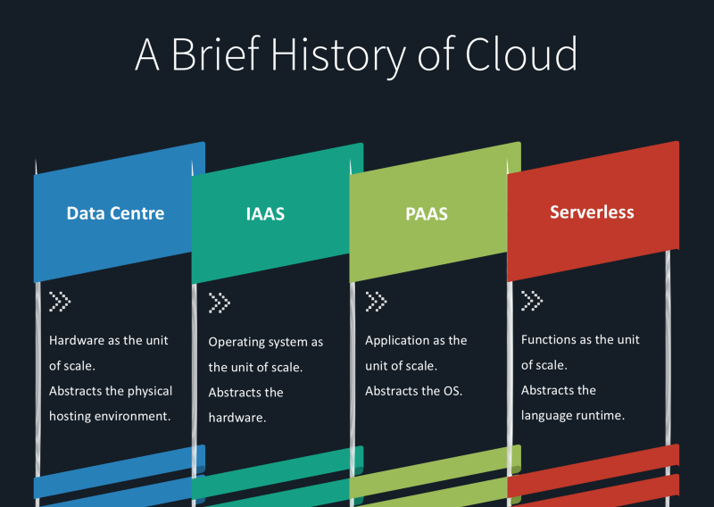
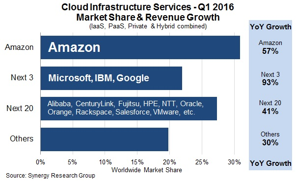
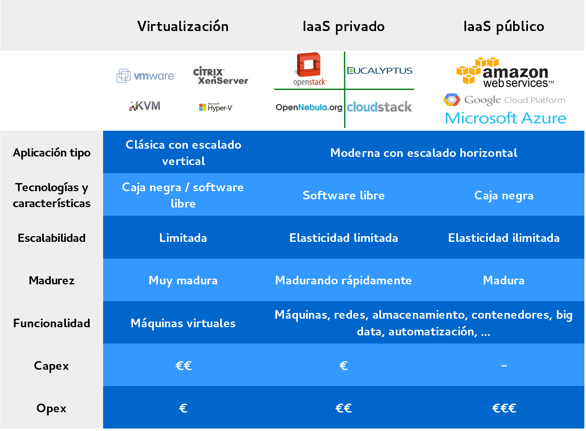
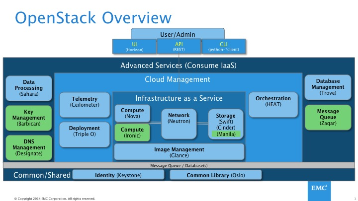

Table of Contents
- Giving some context
- Infrastructure evolution
- From public to private clouds
- Open Source Cloud Platforms
- Why OpenStack?
- OpenStack architecture and components
- OpenStack in action
- Private cloud administration
- References:
- OpenStack Doc: docs.openstack.org
- http://iesgn.github.io/cloud/
Giving some context
{kind=link}
Will Containers Replace Hypervisors? Almost Certainly!
- containers as a deployment tool
- OS or app isolation?
- Homogeneous datacenter
- OpenStack?
Source: Randy Bias: will containers replace hypervisors? almost certainly!
k8s for everything?
Very interesting twitter thread:
Kubernetes is a great framework for building distributed systems, but that does not mean you need to use \ it for everything; or even at all.
— Kelsey Hightower (@kelseyhightower) 10 de junio de 2016
Infrastructure evolution
Infrastructure evolution
What's infrastructure?
Processing, interconnection and data storage equipment
Evolution
- Physical servers
- Virtual machines
- Cloud infrastructure
Traditional infrastructure
- Equipment purchase
- Rack mount
- Physical connection to the network
- "Manual" OS installation and configuration
- Storage provided by NAS or SAN
- Static infrastructure
- Same configurations for years
- Users with no direct access
Virtual Machines
- Several VMs running on a physical machine
- VMs managed by the hypervisor
- VMs connected through virtual networks
- Without significant changes in storage
- Similar management to traditional infrastructure
Cloud Infrastructure
- Machines virtualization
- Network virtualization
- Storage virtualization
- Resource pooling
- Dynamic infrastructure
- Automatic configuration
- The user manages his or her own infrastructure
From public to private clouds
The NIST Definition: Essential characteristics
- On demand self-service
- Broad network access
- Resource pooling
- Rapid elasticity
- Measured service
The NIST Definition: Deployments models
- Public cloud
- Private Cloud
- Hybrid Cloud
The NIST Definition: Service model
- Software as a Service (SaaS)
- Platform as a Service (PaaS)
- Infrastructure as a Service (IaaS)
- Reference:

Serverless?

Source: A brief history of cloud compute: IAAS, PAAS, serverless.
Why a private cloud?
- Cloud management software can become the key element on every datacenter
- Public cloud are fine and an easy option for many cases, but what about ...
- Privacy, Security, Control over data
- Vendor lock-in
- Customization
- Performance
- Overall Cost
Infrastructure as a Service
- Public cloud providers: AWS, GCE & Azure. Is there room for someone else?
- Private Cloud: Open Source platforms
- In this talk we will focus on IaaS and private cloud, mainly in an Open Source Cloud Platform called OpenStack
Cloud Infrastructure Services - Q1 2016
Source: Big Four Still Dominate in Q1 as Cloud Market Growth Exceeds 50%
Virtualization vs IaaS
Open Source Cloud Platforms
CloudStack
- Former cloud.com
- Purchased by citrix on 2011
- Donated to Apache Software Foundation on 2012
- Supports VMware, KVM, XenServer, XCP and Hyper-V
- Easy to use Web interface
- Claims to be compatible with AWS EC2 and S3 APIs
- Jan 2016: Citrix sells CloudPlatform, CloudPortal products to Accelerite
- http://cloudstack.apache.org/
Eucalyptus
- Oldest and most mature? Open Source Cloud platform
- Focus on AWS compatibility
- Licensing issues in the past (Open core?)
- Supports VMware, KVM and Xen
- euca2ools: AWS compatible CLI
- Developed by Eucalyptus Systems
- Eucalyptus Systems purchased by HP in Sept 2014
- http://www8.hp.com/us/en/cloud/helion-eucalyptus-overview.html
OpenNebula
- Data Center Virtualization Software
- Claims to be a VMware vCloud competitor
- Compatible with AWS EC2 API
- OpenNebula Marketplace
- Developed by OpenNebula Community
- Easier to install and configure?
- http://opennebula.org/
The numbers of the Open Cloud
See bitergia's talk at OpenStack Summit:
Why OpenStack?
OpenStack

Open source software for creating private and public clouds
OpenStack Releases
Collaborative development
- Bitergia makes different analysis about OpenStack development
- The Mitaka OpenStack mid-cycle quarterly report
- OpenStack activity dashboard
- OpenStack code contributions dashboard
OpenStack Foundation
- Founded to promote OpenStack development, distribution and adoption
- Open to everyone
- Free individual membership: Community member or Foundation member
- Companies can participate as Platinum members, Gold members, Corporate Sponsors or Supporting Organizations
OpenStack Foundation. Organization
OpenStack Principles
- All of the code for OpenStack is freely available under the Apache 2.0 license
- All available Hypervisors must be supported
- REST APIs and Open Image Format
- Open design process:
- Blueprints
- Public repositories (github)
- Commitment to drive and adopt open standards
- Open community and transparency OpenStack Community. Welcome Guide
Why OpenStack?
- We want to manage our own software to provide IaaS
- Open Source
- Stable project, well supported by companies and with a promising future
- It has a lot of functionalities
- It works fine on conventional hardware
- Easy to install (ha!)
OpenStack architecture and components
Integrated release
- Development model up to OpenStack Kilo
- Official projects
- Incubated projects
- Coordinated release: 201X.Y
- Variable maturity
- Rest of the ecosystem
Big Tent
- "Refactorizing the community"
- More inclusive approach
- OpenStack project if its objectives and development models agree with OpenStack and is under the supervision of the TC
- OpenStack Project Teams
- Tags
The Big Tent - a look at the new OpenStack projects governance
OpenStack Services
OpenStack Modules
Integrated in Kilo
| Name | Function | Name | Function |
|---|---|---|---|
| Nova | Compute | Swift | Object Storage |
| Keystone | Identity | Glance | Image |
| Horizon | Dashboard | Cinder | Block Storage |
| Neutron | Networking | Heat | Orchestration |
| Ceilometer | Telemetry | Ironic | Bare metal |
| Sahara | Hadoop, Spark | Trove | DBaaS |
New in Big Tent:
| Name | Function | Name | Function |
|---|---|---|---|
| Magnum | Containers | Zaqar | Messaging |
| Barbican | Key Mgmt. | Murano | App Catalog |
| Manila | Shared FS | Designate | DNSaaS |
| ... | ... | ... | ... |
OpenStack components
Randy Bias - "Vanilla OpenStack" Doesn't Exist and Never Will
OpenStack Summits
- Organized every 6 months with thousands of participants:
- The OpenStack Conference
- The OpenStack Design Summit
- Videos available
- Next summits:
- October 2016: Barcelona
- May 2017: Boston
OpenStack in action
Basic Concepts
- Image: Preconfigured OS image ready to be launched
- Instance: Virtual machine that runs inside the cloud
- Flavor: Virtual machine specs (RAM, vCPUs, ...)
- Fixed IP: IP assigned when instance is launched and used for communication between instances
- Floating IP: Optional IP used for communication with networks outside the cloud
- Security group: Firewall rules associated to an instance
OpenStack at IES Gonzalo Nazareno
Using OpenStack
- https://albertomolina.wordpress.com/2013/11/20/how-to-launch-an-instance-on-openstack-i-horizon/
- https://albertomolina.wordpress.com/2013/11/20/how-to-launch-an-instance-on-openstack-ii-openstack-cli/
- https://albertomolina.wordpress.com/2013/11/20/how-to-launch-an-instance-on-openstack-iii-python-novaclient-library/
OpenStack and containers
OpenStack and containers
Multiple approaches:
- Kubernetes heat template
- Murano app
- nova-docker
- OpenStack Magnum
- OpenStack Kolla
- Complete integration example: OpenStack (Ironic, Neutron, Nova, Heat) + Mesos + Docker Mesos/Docker clusters with Ironic : A Match Made in Heaven
Private cloud administration
Cloud administration
- The main purpose of a system administrator is to keep applications up and running properly and never lost data
- In this area there are two differents profiles:
- "Cloud application system administrator": Deploys and maintains applications running on the cloud
- "Cloud system administrator": Manages the cloud platform
Cloud application system administrator
- Common to public or private clouds
- Overall knowledge of cloud resources
- REST APIs
- Cloud Orchestration: Cloudformation and Heat
- Image Management and transformation
- Instance life cycle
- Object Storage
- Block Storage
- Containers
- Monitoring
- Automation
- Configuration management
Cloud system administrator
- Not for juniors ;)
- Deep knowledge of underlying technologies: virtualization, networking and storage
- Monitoring
- Automation
- Configuration management
Thanks
Alberto Molina Coballes
Teacher at IES Gonzalo Nazareno
@alberto_molina